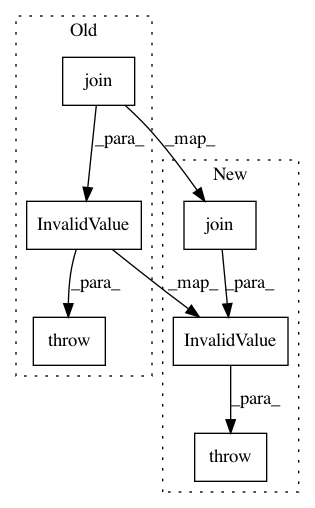

3d95ae5cd11987e4c963baf4da374b1fa139b807,perfkitbenchmarker/providers/openstack/os_virtual_machine.py,OpenStackVirtualMachine,_CheckNetworks,#OpenStackVirtualMachine#,266
Before Change
self.network_name)
stdout, stderr, _ = cmd.Issue()
if stderr:
raise errors.Config.InvalidValue(" ".join(
("Network %s could not be found." % self.network_name,
"For valid network IDs/names run "openstack network list".",)))
if self.floating_ip_pool_name:
cmd = os_utils.OpenStackCLICommand(self, "ip", "floating", "pool", "list")
stdout, stderr, _ = cmd.Issue()
resp = json.loads(stdout)
After Change
self.network_name)
stdout, stderr, _ = cmd.Issue()
if stderr:
msg = " ".join(("Network %s could not be found." % self.network_name,
"For valid network IDs/names",
"run "openstack network list".",))
raise errors.Config.InvalidValue(msg)
if self.floating_ip_pool_name:
cmd = os_utils.OpenStackCLICommand(self, "ip", "floating", "pool", "list")
stdout, stderr, _ = cmd.Issue()
In pattern: SUPERPATTERN
Frequency: 3
Non-data size: 6
Instances
Project Name: GoogleCloudPlatform/PerfKitBenchmarker
Commit Name: 3d95ae5cd11987e4c963baf4da374b1fa139b807
Time: 2016-06-29
Author: carlos.torres@rackspace.com
File Name: perfkitbenchmarker/providers/openstack/os_virtual_machine.py
Class Name: OpenStackVirtualMachine
Method Name: _CheckNetworks
Project Name: GoogleCloudPlatform/PerfKitBenchmarker
Commit Name: ed1c0f5212ab221590e877c708d0cbabd21dac08
Time: 2016-06-29
Author: victor.estrada@rackspace.com
File Name: perfkitbenchmarker/providers/openstack/os_virtual_machine.py
Class Name: OpenStackVirtualMachine
Method Name: _CheckNetworkExists
Project Name: GoogleCloudPlatform/PerfKitBenchmarker
Commit Name: 0708d381ff8ee1ec66f8b646b0df387681bd8b57
Time: 2016-07-01
Author: carlos.torres@rackspace.com
File Name: perfkitbenchmarker/providers/openstack/os_virtual_machine.py
Class Name: OpenStackVirtualMachine
Method Name: _CheckFloatingIPNetworkExists